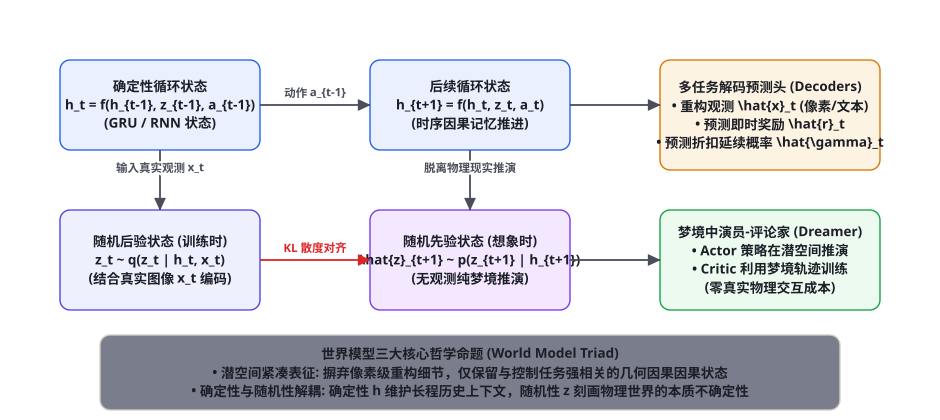
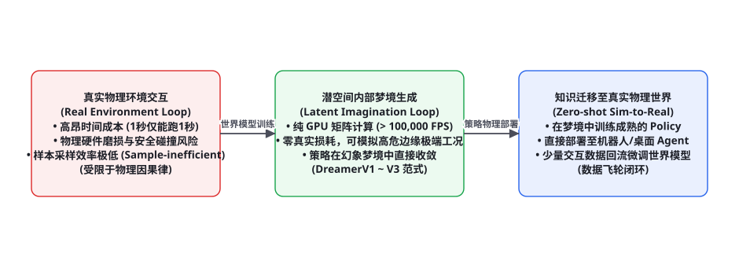

第 95 章 · 世界模型与环境表征：RSSM、Dreamer 与潜空间动力学
现代无模型强化学习（Model-Free RL）存在一个致命死穴：极度贪婪的样本低效性。为了让机械臂学会拧螺丝，往往需要在物理现实中试错数百万次，伴随着昂贵的硬件磨损与时间消耗。而人类婴儿在行动之前，大脑内部已经建立起了一套关于重力、惯性与几何因果的「内部仿真引擎」——世界模型（World Model）。智能体可以在完全脱离物理世界的低维潜空间中自由展开数万次“梦境推演（Imagination）”，以超越物理时间千百倍的算力极速收敛策略。本章我们将系统性推导递归状态空间模型（RSSM）的严密数学方程，解构 Dreamer 系列算法的演进机理，并探讨世界模型对长程多模态 Agent 的颠覆性理论赋能。
世界模型的核心哲学：在心中构筑虚拟宇宙

认知科学先驱肯尼思·克雷克（Kenneth Craik）早在 1943 年的《解释的本质》中就提出：「有机体在头脑中携带着外部世界的‘微型模型’与虚拟可能，使它能够尝试各种可能的行动，在行动前得出最佳结论，并在面临未来突发事件时预先做出反应」。
在基于模型的强化学习（Model-Based RL）演进史上，大卫·哈（David Ha）与于尔根·施密德胡伯（Jürgen Schmidhuber）在 2018 年发表了奠基性的《World Models》。现代世界模型的确立，彻底将智能体从传统「在盲目试错中碰壁」的黑盒状态，升华为了具备前向预测因果引擎的具身心智。其核心由三大互锁的数学组件构成：
1. 感知压缩编码器（Representation Model / Encoder）：将物理世界的高维、充满像素级冗余噪点的高清图像或视频帧 $x_t \in \mathbb{R}^{H \times W \times C}$，无损压缩为紧凑的低维潜空间抽象连续表征 $z_t \in \mathbb{R}^d$（$d \ll H \times W \times C$）。
2. 潜空间转移预测动力学（Transition Dynamics Model）：脱离物理世界，仅基于当前潜状态 $s_t$ 与假想动作 $a_t$，预测下一个潜状态的概率分布：$P(s_{t+1} \mid s_t, a_t)$。此过程完全在 GPU 显存内以光速矩阵乘法运转，零物理耗损。
3. 奖励与终局解码器（Reward & Continue Predictor）：评估在潜空间所产生的虚拟状态 $s_{t+1}$ 下，环境应当赋予的即时收益 $r_t$ 与生存延续概率 $\gamma_t$，从而为策略网络在梦境中的梯度更新提供密集的评价信号。
递归状态空间模型（RSSM）的严密数学推导
丹·哈夫纳（Danijar Hafner）在 2019 年提出的递归状态空间模型（Recurrent State-Space Model, RSSM），是迄今为止工业界与学术界公认最优雅、最鲁棒的世界模型表征骨架（图 95-1）。RSSM 最天才的发明在于打破了单一循环神经网络（RNN）或单一隐马尔可夫模型（HMM）的局限，提出了「确定性路径与随机性路径双轨解耦」架构：
系统状态被严格定义为一个复合二元组：$s_t = (h_t, z_t)$。其内部运行机理遵循如下四大控制方程：
① 确定性时序状态模型（Deterministic State Model）：利用门控循环单元（GRU），根据历史上下文与上一动作严格前向推演：
$$h_t = f_\theta(h_{t-1}, z_{t-1}, a_{t-1})$$
确定性路径 $h_t$ 的物理使命是充当长期记忆的锚点，抵抗随机采样的方差漂移，确保模型在经过数十步模拟后依然牢记最初的战略动机。
② 随机状态后验编码器（Stochastic Posterior / Representation Model）：在训练时，结合当前时刻真实接收到的物理观测图像 $x_t$ 进行严格校准：
$$z_t \sim q_\phi(z_t \mid h_t, x_t) = \mathcal{N}\left(\mu_\phi(h_t, x_t), \sigma_\phi^2(h_t, x_t)\right)$$
③ 随机状态先验转移模型（Stochastic Prior / Dynamics Model）：在纯脱机想象（梦境推演）时，系统无法看到未来的真实观测 $x_t$，必须仅依赖确定性状态 $h_t$ 独立预测可能的潜在状态：
$$\hat{z}_t \sim p_\theta(z_t \mid h_t) = \mathcal{N}\left(\mu_\theta(h_t), \sigma_\theta^2(h_t)\right)$$
④ 证据下界优化目标（ELBO Loss Function）：整个 RSSM 世界模型的端到端训练目标，是最大化观测数据的变分证据下界（Variational Lower Bound）：
$$\mathcal{L}_{\text{RSSM}}(\theta, \phi) = \sum_{t=1}^T \Big[ \underbrace{\mathbb{E}_{q_\phi} \left[ \log p_\theta(x_t \mid h_t, z_t) \right]}_{\text{观测重构似然}} + \underbrace{\mathbb{E}_{q_\phi} \left[ \log p_\theta(r_t \mid h_t, z_t) \right]}_{\text{奖励预测精度}} - \underbrace{\beta \cdot \text{KL}\left( q_\phi(z_t \mid h_t, x_t) \parallel p_\theta(z_t \mid h_t) \right)}_{\text{先验与后验 KL 散度一致性约束}} \Big]$$
注意目标函数中被减去的第三项：后验分布 $q_\phi$ 与先验分布 $p_\theta$ 之间的 KL 散度。如果缺乏这一项，先验转移模型 $p_\theta(z_t \mid h_t)$ 就无法学到真实物理世界的因果规律。通过强行迫使 $p_\theta$ 去逼近结合了真实图像的后验 $q_\phi$，系统在数学上实现了一个神迹：先验模型学会了在“闭上双眼、完全不看任何外部传感器”的前提下，仅仅凭空想象出的潜状态分布，在统计上与睁开眼睛真实看到的世界几乎完全一致！正因如此，智能体才真正获得了在完全脱离现实的纯潜空间梦境中展开策略训练的自由。
从 DreamerV1 到 DreamerV3：世界模型的工业演进

在 RSSM 理论基石确立后，DeepMind 与世界模型学派通过 Dreamer 系列算法，彻底征服了从 Atari 像素游戏、连续动作机械臂控制到高难度 Minecraft 挖矿等一系列通用连续控制领域：
| 算法里程碑 | 核心架构创新 | 解决的核心理论瓶颈 | 标杆性能力突破 |
|---|---|---|---|
| DreamerV1 (2020) | 在连续高斯潜空间中展开演员-评论家（Actor-Critic）梯度回传 | 取代了传统无模型强化学习数百万步的低效物理试错 | 首次在 DeepMind Control Suite 视觉控制基准上超越 Model-Free SOTA |
| DreamerV2 (2021) | 用离散分类潜变量（Categorical Latent Variables）取代连续高斯分布 | 彻底消除连续高斯表征的均值回归模糊，精准刻画突变物理碰撞 | 首个在 Atari 57 完整基准上单机超越人类专业玩家水准的世界模型 |
| DreamerV3 (2023) | 引入 Symlog 仿射缩放、自由位（Free Bits）自适应 KL 平衡与回缩缩放 | 彻底解决不同任务奖励尺度暴涨导致的训练崩溃，实现无超参数通用适配 | 首个在无任何人类先验数据下，从零自主在 Minecraft 中收集钻石的通用纯强化学习算法 |
形式化模拟代码：RSSM 潜空间确定性与随机性推演引擎
以下给出基于 PyTorch 的 RSSM 核心网络实现，涵盖 GRU 确定性状态推进、变分隐变量后验重参数化采样以及先验-后验 KL 散度计算：
import torch
import torch.nn as nn
from typing import Tuple, Dict
class RSSMTransitionCore(nn.Module):
def __init__(self, action_dim: int, deter_dim: int = 512, stoch_dim: int = 32):
super().__init__()
self.deter_dim = deter_dim
self.stoch_dim = stoch_dim
# 确定性转移网络: GRU Cell
self.rnn_cell = nn.GRUCell(stoch_dim + action_dim, deter_dim)
# 随机先验网络 (梦境时仅基于 h_t 预测先验分布 p(z_t | h_t))
self.prior_mlp = nn.Sequential(
nn.Linear(deter_dim, 256),
nn.ELU(),
nn.Linear(256, 2 * stoch_dim) # 输出均值 mu 与 log_std
)
# 随机后验网络 (训练时结合真实观测编码 e_t: q(z_t | h_t, e_t))
self.posterior_mlp = nn.Sequential(
nn.Linear(deter_dim + 256, 256), # 假设观测已被 CNN 编码为 256 维向量
nn.ELU(),
nn.Linear(256, 2 * stoch_dim)
)
def reparameterize(self, mu: torch.Tensor, log_std: torch.Tensor) -> torch.Tensor:
"""重参数化技巧采样高斯随机隐变量 z = mu + eps * std"""
std = torch.exp(torch.clamp(log_std, min=-10.0, max=2.0))
eps = torch.randn_like(std)
return mu + eps * std
def forward_step_posterior(self, prev_h: torch.Tensor, prev_z: torch.Tensor,
action: torch.Tensor, obs_embed: torch.Tensor) -> Dict[str, torch.Tensor]:
"""训练模式: 结合当前真实物理观测推进确定性与后验状态"""
# 1. 推进确定性路径 h_t = f(h_{t-1}, z_{t-1}, a_{t-1})
rnn_in = torch.cat([prev_z, action], dim=-1)
h = self.rnn_cell(rnn_in, prev_h)
# 2. 计算后验分布 q(z_t | h_t, e_t) 并采样
post_in = torch.cat([h, obs_embed], dim=-1)
post_stats = self.posterior_mlp(post_in)
post_mu, post_log_std = torch.chunk(post_stats, 2, dim=-1)
z = self.reparameterize(post_mu, post_log_std)
# 3. 计算无观测先验 p(z_t | h_t) 用于对齐约束
prior_stats = self.prior_mlp(h)
prior_mu, prior_log_std = torch.chunk(prior_stats, 2, dim=-1)
# 4. 解析计算高斯先验与后验的 KL 散度
prior_std = torch.exp(prior_log_std)
post_std = torch.exp(post_log_std)
kl_div = torch.sum(
prior_log_std - post_log_std + (post_std**2 + (post_mu - prior_mu)**2) / (2.0 * prior_std**2 + 1e-6) - 0.5,
dim=-1
)
return {
"h": h, "z": z,
"kl_loss": kl_div,
"prior_mu": prior_mu, "post_mu": post_mu
}
def imagine_step_prior(self, prev_h: torch.Tensor, prev_z: torch.Tensor,
action: torch.Tensor) -> Tuple[torch.Tensor, torch.Tensor]:
"""梦境推演模式: 完全不依赖真实物理观测，纯潜空间闭环递归"""
rnn_in = torch.cat([prev_z, action], dim=-1)
h = self.rnn_cell(rnn_in, prev_h)
# 纯潜空间先验预测
prior_stats = self.prior_mlp(h)
prior_mu, prior_log_std = torch.chunk(prior_stats, 2, dim=-1)
z = self.reparameterize(prior_mu, prior_log_std)
return h, z
# ================= 单元测试与确定性推演验证 =================
if __name__ == "__main__":
batch_size = 4
act_dim = 6
rssm = RSSMTransitionCore(action_dim=act_dim, deter_dim=128, stoch_dim=16)
# 初始状态与动作
init_h = torch.zeros(batch_size, 128)
init_z = torch.zeros(batch_size, 16)
sample_act = torch.randn(batch_size, act_dim)
fake_obs = torch.randn(batch_size, 256)
# 1. 模拟带真实图像的单步训练
step_res = rssm.forward_step_posterior(init_h, init_z, sample_act, fake_obs)
print(f"训练步输出: h 形状 {step_res['h'].shape}, z 形状 {step_res['z'].shape}")
print(f"先验-后验平均 KL 散度: {step_res['kl_loss'].mean().item():.4f}")
# 2. 模拟脱离现实的连续 5 步梦境想象推演
h_curr, z_curr = step_res["h"], step_res["z"]
print("\n=== 启动潜空间连续梦境推演 (Zero Physical Cost) ===")
for dream_step in range(5):
dream_act = torch.randn(batch_size, act_dim)
h_curr, z_curr = rssm.imagine_step_prior(h_curr, z_curr, dream_act)
print(f"梦境第 {dream_step+1} 步: 成功推演出确定性状态 h (L2模长: {h_curr.norm(dim=-1).mean().item():.2f})")大语言模型（LLM）作为世界模型：符号与物理的交汇
在通用大模型崛起之后，人工智能学界爆发了一场关于世界模型的顶级理论大辩论：纯文本预训练的 Transformer 究竟是否蕴含着一个可信的物理世界模型？
图灵奖得主严立昆（Yann LeCun）长期对自回归生成式模型持怀疑态度，指出文本只是极度压缩的人类抽象符号表面，单纯靠 Next-Token Prediction 绝不可能涌现出完备的三维时空连续物理世界因果模型，因此提出了联合嵌入预测架构（JEPA, Joint Embedding Predictive Architecture）：主张彻底废弃自回归重构像素或 Token，转为直接在非生成式的抽象潜空间中预测未来的抽象特征向量。
而另一方面，来自 OpenAI 与 DeepMind 的学者通过奥赛罗棋（Othello-GPT）与代码执行器等实证研究发现：随着模型规模跨越临界阈值，大语言模型内部确实自发构建起了一套隐式的离散时空状态转移图！
| 流派范式 | 表征空间形式 | 预测目标 | 在 AI Agent 中的核心应用场景 |
|---|---|---|---|
| 视觉/连续世界模型 (RSSM/JEPA) | 连续/分块离散高斯潜向量空间 $\mathbb{R}^d$ | 下一物理时间步的潜在特征表示与能量打分 | 具身机器人抓取、自动驾驶端到端规划、物理动作控制 |
| 符号/语言世界模型 (LLM World Model) | 自回归离散 Token 序列字典空间 $\mathcal{V}^*$ | 下一步系统状态描述、环境返回值、错误日志文本 | 软件工程重构模拟、复杂业务工作流演练、法律与政策推演 |
| 神经符号混合世界模型 (混合架构) | 连续视觉几何潜空间 + 离散因果符号关系图谱 | 高层因果关系指导底层物理动作仿真 | 全能具身通用 Agent（桌面操作 + 真实物理交互） |
DreamerV3 数值稳定性革命：Symlog 仿射缩放与双热编码（Two-Hot Encoding）
在强化学习历史上，算法超参数往往极其脆弱：在一个任务（如 Atari 乒乓球）上调好的学习率和损失权重，换到另一个任务（如机械臂 3D 抓取）上就会瞬间发生数值梯度爆炸（Gradient Explosion）或消失。这是因为不同物理环境的奖励与观察值在尺度上存在高达数个数量级的巨大鸿沟（有些任务的即时奖励是 0.01，而有些任务的分数高达 500,000）。
DreamerV3 之所以能够用完全固定的一套超参数统治跨域数十个基准，其核心数学秘密就在于两项开创性的数值稳定性技术：对称对数变换（Symlog Transformation）与连续目标离散双热表示（Two-Hot Categorical Representation）。
对称对数变换（Symlog）数学公式
传统的 $\log(x)$ 变换无法处理负数且在 $x \to 0$ 时发生无穷大发散。Symlog 创造性地通过符号函数（Sign）对称保留了正负区间的对称动态压缩特性：
$$\text{symlog}(x) = \text{sign}(x) \cdot \ln(|x| + 1)$$
其完全可逆的逆变换公式（Symexp）为：
$$\text{symexp}(y) = \text{sign}(y) \cdot \left( \exp(|y|) - 1 \right)$$
通过在神经网络的输入端与输出端前置包裹 Symlog 算子，跨度从 $10^{-4}$ 到 $10^6$ 的极端物理动态范围，被近乎完美地非线性压缩至 $[-15, 15]$ 的平缓数值区间内，彻底消除了梯度范数剧烈震荡的隐患。
双热离散分类表征（Two-Hot Encoding）
传统的均方误差回归（MSE Loss）在遇到极端离群点时，会产生高达误差平方倍数的巨额梯度，瞬间冲垮神经网络。DreamerV3 彻底抛弃了标量回归，将价值函数 $V$ 与奖励预测 $r$ 离散化为 255 个等间距的 Symlog 桶（Buckets）。对于任意连续目标值 $y$，其被编码为与其相邻的两个离散桶上的凸组合（Convex Combination）：
设 $y$ 落在区间 $[b_k, b_{k+1}]$ 之间，分配给两个相邻桶的概率分别为：
$$p_k = \frac{b_{k+1} - y}{b_{k+1} - b_k}, \quad p_{k+1} = \frac{y - b_k}{b_{k+1} - b_k}$$
神经网络通过 Softmax 输出对所有桶的概率分布，并使用标准的交叉熵损失（Cross-Entropy Loss）进行训练。这使得损失函数的梯度永远被截断在 $[-1, 1]$ 之间，无论真实世界的奖励发生怎样暴力的突变，世界模型都能如同坚固的岩石一般岿然不动。
梦境中的演员-评论家：基于 GAE 的潜空间策略优化循环
当 RSSM 世界模型在潜空间中以超过每秒 100,000 步的惊人速度推演出长度为 $H$ 的虚拟轨迹时，策略网络（Actor $\pi_\psi(a \mid s)$）与价值网络（Critic $v_\xi(s)$）是如何在纯梦境中直接收敛的？
系统采用基于广义优势估计（Generalized Advantage Estimation, GAE / $\lambda$-return）的潜空间价值回溯：
$$V_t^\lambda = \hat{r}_t + \hat{\gamma}_t \left( (1 - \lambda) v_\xi(\hat{s}_{t+1}) + \lambda V_{t+1}^\lambda \right), \quad V_H^\lambda = v_\xi(\hat{s}_H)$$
策略网络 Actor 的优化目标极为优雅：直接利用潜空间可微动态模型（Differentiable Dynamics）的梯度链，通过反向传播将未来长期价值的梯度一穿到底地回传给当前动作！
import torch
import torch.nn as nn
from typing import Dict
class LatentDreamerTrainer:
def __init__(self, rssm_core, actor_net, critic_net, horizon: int = 15, gamma: float = 0.99, lambda_: float = 0.95):
self.rssm = rssm_core
self.actor = actor_net
self.critic = critic_net
self.horizon = horizon
self.gamma = gamma
self.lambda_ = lambda_
def imagine_ahead(self, initial_h: torch.Tensor, initial_z: torch.Tensor) -> Dict[str, torch.Tensor]:
h_seq = [initial_h]
z_seq = [initial_z]
action_seq = []
curr_h, curr_z = initial_h, initial_z
for step in range(self.horizon):
state_feat = torch.cat([curr_h, curr_z], dim=-1)
action = self.actor(state_feat)
action_seq.append(action)
next_h, next_z = self.rssm.imagine_step_prior(curr_h, curr_z, action)
h_seq.append(next_h)
z_seq.append(next_z)
curr_h, curr_z = next_h, next_z
return {
"h": torch.stack(h_seq, dim=0),
"z": torch.stack(z_seq, dim=0),
"actions": torch.stack(action_seq, dim=0)
}
def compute_lambda_returns(self, rewards: torch.Tensor, values: torch.Tensor) -> torch.Tensor:
H = rewards.shape[0]
returns = torch.zeros_like(values)
returns[-1] = values[-1]
for t in reversed(range(H)):
returns[t] = rewards[t] + self.gamma * (
(1.0 - self.lambda_) * values[t+1] + self.lambda_ * returns[t+1]
)
return returns[:-1]前沿演进：具身大模型中的端到端世界模拟器
随着具身机器人与通用电脑控制（Computer Use，第 89 章）的爆发，世界模型正在从过去单纯的几层小 GRU，全面升级为千亿参数规模的自回归视觉世界生成器（如 Sora, Genie, UniSim）。智能体在下发点击或操控机械臂之前，内部模拟器可以在 1 秒内生成出未来 5 秒内屏幕界面的动态渲染视频流，直接在视觉视频预测的特征空间中进行反事实风险推演。
| 世界模型代际 | 代表性系统 | 核心架构与基元 | 与动作控制的协同范式 |
|---|---|---|---|
| 第一代: 状态空间与小网络 | World Models (2018), DreamerV1 | VAE + MDN-RNN / GRU 连续隐变量 | 通过重参数化梯度回传至 Actor 网络 |
| 第二代: 离散变分与鲁棒缩放 | DreamerV3, IRIS, DayDreamer | 离散分类潜变量 + Symlog 仿射鲁棒缩放 | 实现从像素到连续动作的通用零超参收敛 |
| 第三代: 大规模生成式世界模拟器 | Sora, Genie, UniSim, GAIA-1 | 自回归多模态 Transformer + Diffusion 潜扩散 | 作为通用因果仿真引擎，为上层 Agent 提供闭环环境评估 |
在这个深刻的认知视界中，世界模型不仅为单智能体提供了强大的反事实推理能力，更为多智能体协作与对抗博弈构建了全真的数字孪生演练场。从虚拟经济系统的宏观调控模拟，到复杂物理环境中的多机协同作战，潜空间动力学正在重塑我们理解复杂系统与控制未来的根本方式。
与此同时，基于端到端可微潜空间的世界模型，使得传统强化学习中脆弱不堪的策略梯度估算，一跃升级为具备解析全导数支持的高确定性梯度链。无论是应对极端复杂物理约束的机器人控制，还是跨越数千步长时程的软件重构与战略决策，世界模型都展现出了无与伦比的数学优雅与工程威能。
这种将物理世界的连续动力学规律内化于神经权重、并以自省想象超越现实约束的宏伟架构，必将成为人类通往通用人工智能（AGI）殿堂最坚不可摧的理论支柱与工程阶梯。
它让数字生命在硅基比特的海洋中，真正拥有了理解时空演进与掌控未知明天的深邃智慧。
世界模型的理论突破，正指引着人类科技文明迈向全自主智能的浩瀚星辰大海。
世界模型的认识论跃迁：从机械反射到因果心智的彼岸
回顾从行为主义（Behaviorism）到认知主义（Cognitivism）的百年科学演进，我们清晰地看到了一条从「刺激-反应（Stimulus-Response）」到「内部心智表征（Mental Representation）」的伟大飞跃。传统的无模型强化学习与简单的自回归单前向预测，在物理本质上依然停留在行为主义的反射阶段；而世界模型的诞生，真正宣告了人工智能迈入了认知心智的成熟期。
通过在本章将递归状态空间模型（RSSM）的确定性-随机性双轨状态方程、变分证据下界（ELBO）的数学推导、Dreamer 系列从连续高斯到离散分类的代际演化、以及 Symlog 仿射缩放与双热编码的数值稳定性突破熔为一炉，我们实际上为智能体构筑了一座永恒运转于潜空间深处的因果推演沙盒。智能体无需肉身涉险，便能在纯粹的心灵潜空间中穷尽万千可能，在瞬息之间完成跨越物理时空的战略决断。这一理论基石，不仅为自动驾驶、具身机器人与通用电脑控制扫清了样本效率的终极障碍，更点亮了通用人工智能迈向因果推理圣殿的璀璨火炬。
三个高频理论疑问
Q：为什么说模型在“纯像素级别（Pixel-level）”重构未来画面的世界模型（如视频生成模型 Sora）并不适合直接充当高效的智能体控制策略规划器？纯像素空间预测存在严重的「海量无关高频信息浪费（Perceptual Waste）」。例如，一辆自动驾驶汽车在街道上行驶，路边树叶的随风摆动、远处云层的飘忽形态、地面积水的光影倒影，都在像素级别占据了高达 90% 的信息量；但对于安全驾驶决策（刹车还是避让）而言，这些全都是毫无意义的高熵白噪声！如果在控制中强行要求模型去精确生成每一个像素，不仅算力开销巨大、帧率低至 1 FPS，而且任何局部微小的像素模糊都会导致下游控制器产生致命的幻觉失误。这就是为什么控制论要求世界模型必须在「任务相关的潜空间（Task-relevant Latent Space）」中做状态推演，彻底将与因果无关的高频视觉噪点剥离淘汰。
Q：在梦境推演（Latent Imagination）中，随着推演步数变长，必然会发生“复合误差（Compounding Error）导致梦境畸变”，如何防止智能体在扭曲的幻象中做出荒谬决策？这属于世界模型最致命的「客观性漂移（Objectivity Drift）」。在潜空间推演 3~5 步时尚可信赖，但推演到第 20 步时，微小的预测偏差在递归自回归下呈指数级发散，梦境世界中的物理定律（如重力常数或接口协议）已经彻底发生形变。工业级防线有三：① 截断展开视界（Horizon Truncation）：在梦境推演时严格限制推演深度 $H \le 12$ 步，绝不进行无节制的超长程空想；② 不确定性感知惩罚（Uncertainty-Aware Reward Penalty）：通过集成（Ensemble）多个独立的世界模型，计算不同模型对同一假想状态的预测方差 $\sigma_{\text{ensemble}}^2$；若方差过大，直接在假想奖励中施加强力惩罚，阻止策略网络走进未知的虚幻领域；③ 周期性真实物理锚定（Periodic Real-World Grounding）：每在梦境中训练若干轮次，强制回到真实环境中运行 1 次基准验证，用真实的硬物理数据强行重校世界模型参数。
Q：什么是基于世界模型的“心智理论（Theory of Mind, ToM）”？它如何赋能多智能体系统的交互理解？在认知科学中，高级哺乳动物不仅拥有关于物理世界的模型，更拥有「关于其他同类心理状态的世界模型」——即推测「我认为你在认为什么」。在多智能体对抗或协作中，一个配备了高级心智理论的 Agent，其内部世界模型不仅包含物理状态转移方程，更显式建模了对手或队友的隐式策略参数 $\theta_{\text{other}}$ 与信念状态 $b_{\text{other}}$。在决策前，它在自己的心智沙箱中模拟演练：「如果我执行动作 A，对手根据它的信念模型会产生何种反应？」。这种多层级递归心智模拟（Recursive Mind Simulation），是智能体从低级机械反应迈向高级博弈协商、欺骗识别与深度团队默契的终极认知跳板。
本章在全书理论脉络中的承接：上接第 91 章（马尔可夫决策过程与博弈论）、第 92 章（控制论状态空间与卡尔曼滤波）以及第 94 章（MCTS 树搜索规划），本章从**连续潜空间动力学、变分自编码器（VAE/RSSM）与内部环境仿真**的最高前沿视角，彻底打破了无模型试错的算力瓶颈。下接第 96 章（神经符号 AI 与混合推理系统）。复习锚点：RSSM 确定性与随机性双轨方程、Dreamer 潜空间梦境训练流水线（95-2）、变分证据下界（ELBO）数学推导、复合误差截断防御对策。
本章小结
- 世界模型（World Model）是智能体摆脱低效物理试错、实现通用智慧的核心枢纽，使智能体能够在低维潜空间中以超越现实千百倍的速率展开虚拟梦境推演。
- RSSM 创造性地将确定性 GRU 路径（维持长程因果记忆）与随机变分路径（捕获物理环境不确定性）有机融合，奠定了现代连续控制世界模型的理论根基。
- 变分证据下界中的 KL 散度项强制先验转移模型向结合了真实图像的后验模型严格对齐，赋予了智能体在闭目无观测状态下精准预测未来的非凡心智。
- DreamerV1 至 V3 历经三代演进，通过离散分类潜变量与 Symlog 归一化缩放，实现了无超参数跨连续与离散领域的通用强化学习控制突破。
- 严格控制梦境推演深度并引入模型集成不确定性惩罚，是彻底消除世界模型复合误差发散与物理漂移的终极工程防线。
自测题
- 请写出递归状态空间模型（RSSM）中，确定性状态 $h_t$ 与随机状态 $z_t$ 的数学递推方程，并解释为什么要将两者解耦为双轨架构？
- 在 RSSM 的端到端训练目标中，解释为什么需要最小化先验分布 $p(z_t \mid h_t)$ 与后验分布 $q(z_t \mid h_t, x_t)$ 之间的 KL 散度？它为后续的纯潜空间梦境推演带来了什么决定性作用？
- 对比无模型强化学习（Model-Free RL）与基于世界模型的强化学习（Dreamer 系列）：为什么说 Dreamer 在样本效率（Sample Efficiency）与安全性上具备降维打击式的优势？
- 当智能体在潜空间中进行长达 20 步的前向梦境规划时，什么是“复合误差（Compounding Error）”？工业级架构通常采用哪两种核心机制来遏制因果漂移？
参考文献与延伸阅读
- Ha, D. & Schmidhuber, J. (2018). Recurrent World Models Facilitate Policy Evolution. Advances in Neural Information Processing Systems (NeurIPS). arXiv:1809.01999
- Hafner, D. et al. (2019). Dream to Control: Learning Behaviors by Latent Imagination (DreamerV1). arXiv:1912.01603
- Hafner, D. et al. (2020). Mastering Atari with Discrete World Models (DreamerV2). arXiv:2010.02193
- Hafner, D. et al. (2023). Mastering Diverse Domains through World Models (DreamerV3). arXiv:2301.04104
- LeCun, Y. (2022). A Path Towards Autonomous Machine Intelligence (JEPA Architecture). OpenReview.
- Craik, K. J. (1943). The Nature of Explanation. Cambridge University Press.